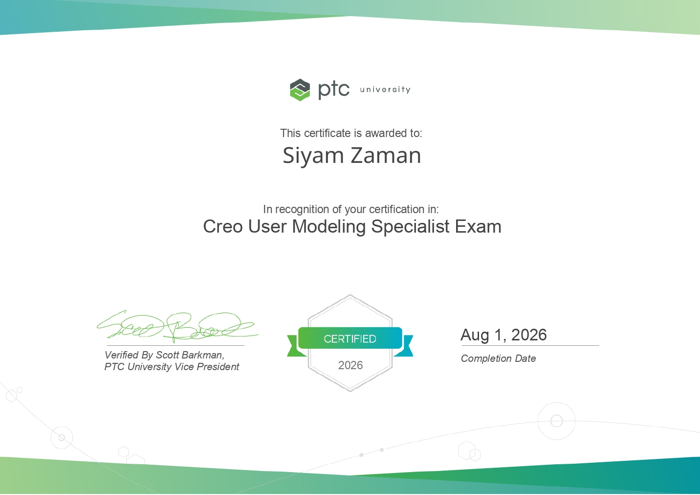
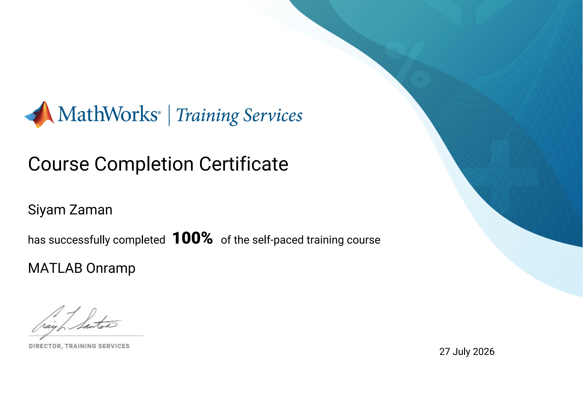
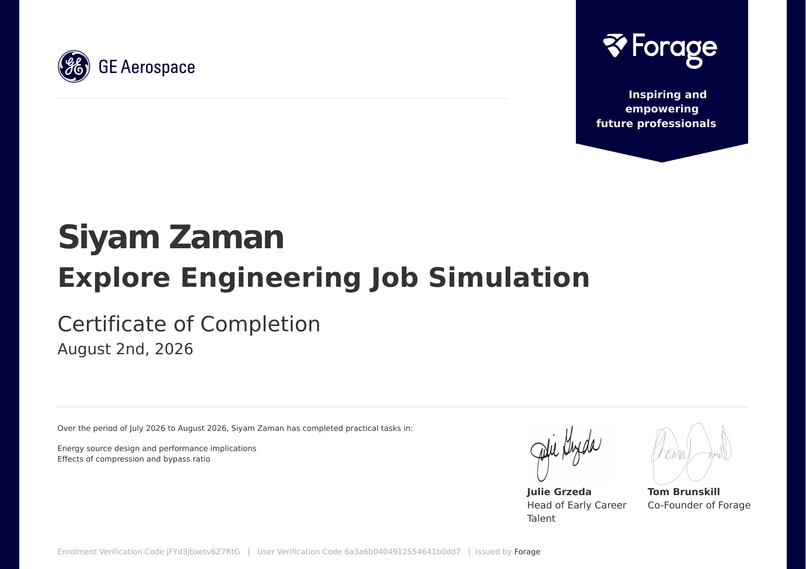

Creo User Modeling Specialist Exam
Focused on part modeling skill, design intent, references, feature creation, and clean parametric CAD practices in Creo.
{kind=link}

Completed credentials and ongoing training in CAD, engineering analysis, simulation, and engineering decision-making.
These credentials support mechanical design, CAD modeling, engineering documentation, computational analysis, and simulation work.
Focused on part modeling skill, design intent, references, feature creation, and clean parametric CAD practices in Creo.

Completed 100% of the MathWorks self-paced MATLAB Onramp course, building foundational skills for engineering computation and data analysis.

Completed a Forage job simulation covering energy-source design, performance implications, and the effects of compression and bypass ratio in aerospace engineering.

Focused on assembly structure, constraints, component relationships, packaging, and mechanical fit between parts.
Focused on engineering drawings, annotation, tables, view creation, and documentation practices for communicating designs clearly.
Building skills in finite element analysis and computational fluid dynamics workflows using ANSYS.
{kind=link}
{kind=link}